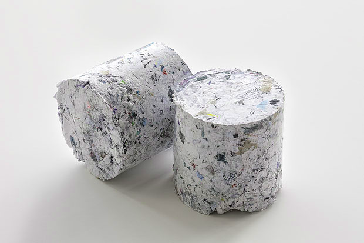

Papírbrikett
Az otthon felhalmozódó papírhulladékok - újságok, szórólapok, csomagolóanyagok mint természetes alapanyagok - valóban remek alapanyagként hasznosíthatóak újra a brikettgyártásban. A papírbrikettek házilagos elkészítése egyszerű és könnyű feladat, nem igényel komoly gépeket, bár időigényes folyamat.

Egy újabb ötletes és praktikus tüzelőanyag, amelyel sokak számára újdonság, pedig házilagos előállítására remek eszközök kaphatók vagy készíthetők.
Milyen papírból készülhet a papírbrikett?
Legmegfelelőbb természetesen a kartondoboz, a kemény papírok és a hagyományos fekete-fehér újság, amely a divatos magazinokkal szemben kevés fényes lapot és színes festéket tartalmaz.
A brikettálás előkészítése

Egy „téglás” asztali prés és két „téglás” fali prés
- Ha idegen anyagot látunk a papíron (ragasztó, fémkapocs...), azt a felhasználás előtt el kell távolítani.
- Ezt követően érdemes apróbb darabokra vágni a papírlapokat, hogy egyszerűen dolgozhassunk velük. Legpraktikusabb, ha iratmegsemmisítővel le tudjuk darálni a papírt, így bizalmas adatokat tartal-mazó feleslegessé vált papírjaink is remek alapanyagul szolgálhatnak.
- Szükségünk lesz egy edényre (vödör, hordó...), amiben az áztatást végezzük. Nem szükséges ivóvizben áztatni, esővíz vagy kúvíz is tökéletesen megfelel, és az áztatóvíz többször is újrahasználható.
- Több leírás fúrógépre szerelt keverőszárat is javasol, de ha nem akarunk villamos áramot felhasználni a készítéshez, akkor megnövelt áztatási idő mellett egy pár gumikesztyű is megteszi.
- Be kell szereznünk továbbá egy préselőeszközt, ami a brikett formáját kialakítja.
- Valamint szükségünk lesz egy szárítófelületre, lehetőleg szabadban vagy jól szellőző helyen.
A gyártás lépései
- A feldarabolt papírt áztassuk be.
- Ha fúrószárral keverünk, akkor 2-3 órára, ha kézzel, akkor akár 6-10 órára (közben 1-2 óránként érdemes átkeverni).
- A pépes állagú biomasszát a házilag készített vagy erre a célra vásárolt préskeretbe töltjük, és a masszában lévő víz kipréselésével formázzuk.
- A napon kiszárítjuk. Nem szabad a szárítást sürgetni, borongósabb időben akár heteket is igénybe vehet ez a művelet.
- Száraz helyen raktározzuk.
Minél tovább áztatjuk a papírt, annál pépesebb lesz, és annál nagyobb szilárdságú brikettet tudunk készíteni, de ez nagyban megnövelheti a tökéletes kiszáradás idejét.